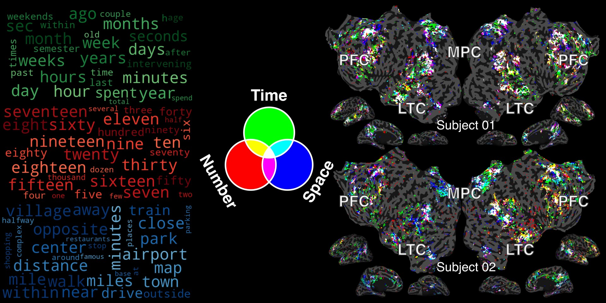
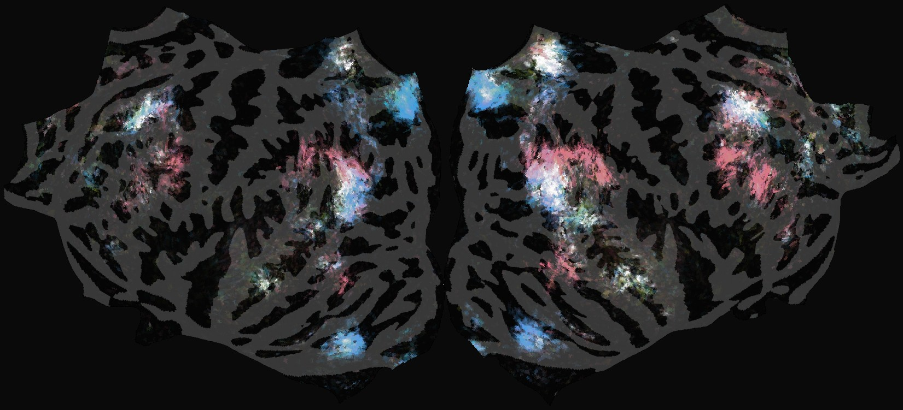

A Distributed Cortical Network Integrates Semantic Representations of Number, Space, and Time
The short version
Words about number, space and time drive a shared network in the cortex, in which some regions respond to all three and others prefer one.
The question
Researchers have long suspected that the brain judges how many, how far and how long with one shared system. Vincent Walsh’s theory of magnitude (2003) proposed a common system for the three in parietal cortex. Behavioral experiments support the idea, but brain-imaging studies have disagreed with one another.
Most of that imaging work measured how people perceive quantities. We asked about language instead: do words about number, space and time drive the same parts of the cortex?
The obstacle
Stories are full of all three kinds of word, so a single experiment, people listening to stories in an fMRI scanner, can map them together. The difficulty lies in the model. The word features that predict brain activity best pack number, space and time into overlapping directions, so a patch of cortex that responds to numbers also appears to respond to time. An overlap found on the brain could then come from the features rather than from the brain.
The idea
The NeurIPS 2025 paper removes that problem by rewriting the word features as concept atoms, one concept to each axis. Number, time and space each get an atom of their own, so their maps can be laid over one another and compared fairly.
What we found
In each listener, the three maps meet in parietal and frontal cortex
The first analysis, in seven listeners, took the voxels (small cubes of brain) most strongly tuned to each atom and colored them red for number, green for time and blue for space. White marks voxels tuned to all three. The white falls in the intraparietal sulcus and the inferior frontal gyrus, in both hemispheres: regions that earlier studies of magnitude have pointed to.


Across nineteen listeners, the sharing is a matter of degree
The CCN poster repeats the analysis in 19 listeners and asks how each voxel divides its response among the three quantities. Quantity words drive a network spread over temporal, parietal and frontal cortex. Within it, tuning falls along a continuum: voxels in some regions respond mostly to one quantity, and voxels in others respond to all three.


- number
- time
- space
- all three
What it means
The results fit the idea of a shared magnitude system, with a qualification: the sharing is spread over a network, and its degree varies from region to region. The poster suggests such a network may support the flexible use of quantity concepts in everyday tasks. These are maps of word meaning, so they say how the brain represents the concepts of number, space and time, and do not test the perception of quantities directly.
For the details
The extended abstract is on OpenReview. The seven-listener analysis is section 2.6.5 of my thesis. The brain viewer shows the 19-listener maps for the group and for three individual listeners, with a guided tour. The method has its own page, with a five-minute talk.
Abstract
Prior studies have shown that perceptual representations of number, space, and time concepts are represented in several different regions of the human cerebral cortex. These quantities can also be represented as lexical- semantic concepts, but little is known about how lexical-semantic representations of quantity are organized across the cerebral cortex? We used voxelwise encoding models and a sparse lexical-semantic feature space, to map quantity representations in 19 participants who listened to narrative stories in the fMRI scanner. We find that quantity is represented in a distributed temporal, parietal, and frontal network. Inspection of voxel tuning profiles showed that tuning for space, time or number falls along a continuum. Voxels in some regions are highly selective for a single quantity, while those in other regions respond to all three domains. These results suggest that the brain represents space, time and number concepts in a distributed network of regions with varying degrees of cross-domain integration. This distributed network may support the flexible use of quantity concepts in everyday tasks.
As published on the CCN 2026 site: poster C46, Poster Session C, Wednesday 5 August 2026, Kimmel Center, New York University.
BibTeX
@inproceedings{hendrikx2026distributed,
title = {A Distributed Cortical Network Integrates Semantic Representations
of Number, Space, and Time},
author = {Hendrikx, Evi and Zeng, Alicia and Yashaswini and
Visconti di Oleggio Castello, Matteo and Gallant, Jack L.},
booktitle = {Conference on Cognitive Computational Neuroscience (CCN)},
year = {2026},
url = {https://openreview.net/forum?id=V6IilrmWYe},
note = {Poster}
}